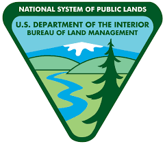
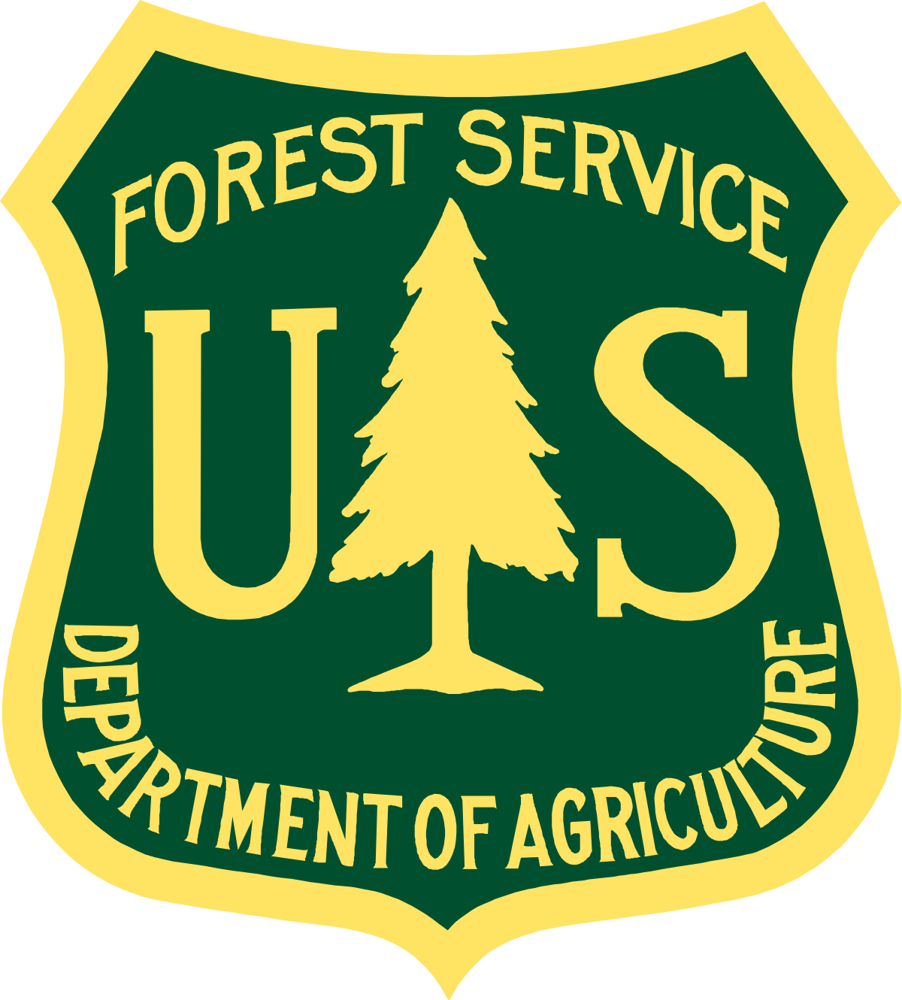
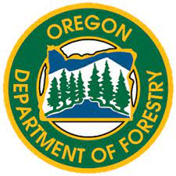
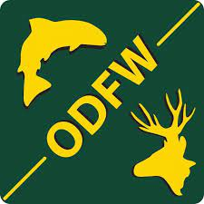
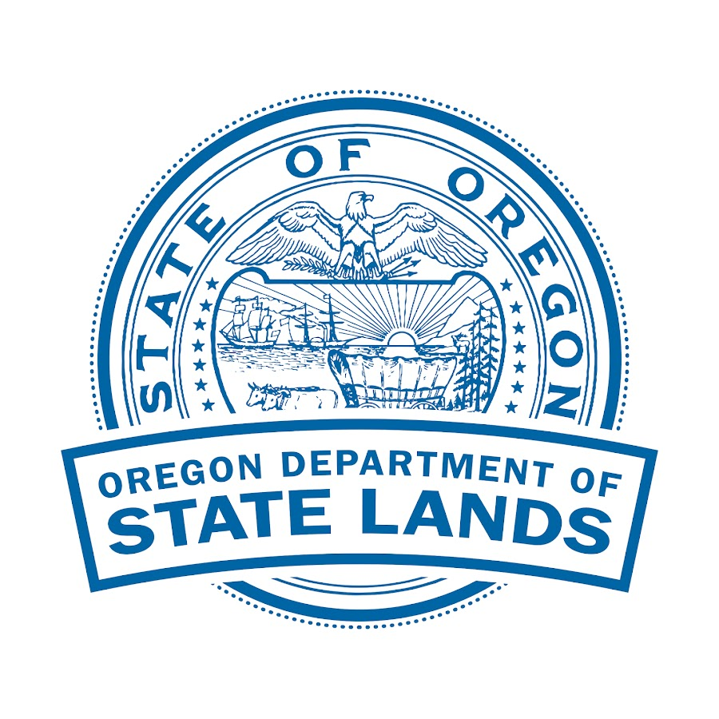
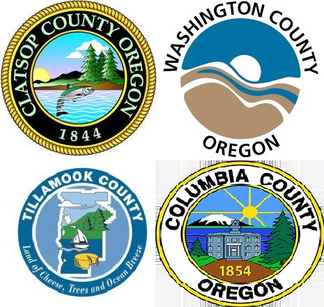
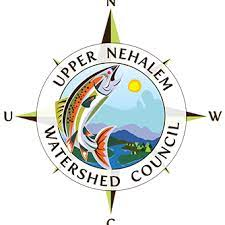
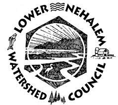

Bureau of Land Management
- Roads and Highways
- Land Management Designations
United States Geological Service
- NLCD Landcover Data
- LANDSAT Satellite Imagery
- gSSURGO Soil Data

United States Forest Service
- NorWEST Temperature Monitoring
United States Fish & Wildlife Service
- Hydrological Unit Designations
- National Wetland Inventories
Bureau of the Census
- Census Block Tiger Files
- 2022 ACS Survey Data

United States Department of Agriculture
- Precipitation Data
- Soil Data
- Climate Change Scenario Data

Oregon Department of Forestry
- Hydrography
- Landslide Data
- Stand Level Inventories
- Managed Land
- Seed Zones
- Habitat Conservation Areas
- Timber Sales
- Roads

Oregon Department of Fish & Wildlife
- Essential Salmon Habitat
- Fish Distribution
- Coho IP
- Fish Passage Barriers
- OWRI
- AQI
Oregon Department of Geology and Minerals
- LiDAR Data
- Landslide Risk
- Geological Data

Oregon Department of State Lands
- Essential Salmon Habitat
- Local Wetland Inventories

Clatsop, Columbia, Tillamook, and Washington Counties
- Taxlots
- Roads
- Boundaries
- City Limits
- Parks

Upper Nehalem Watershed Council
- Salmon Rapid Bio Assessments
- Stream Surveys
- HOBO Temperature Data
- LWD Project Locations

Lower Nehalem Watershed Council
- Salmon Rapid Bio Assessments
- GPS Points
- Fish Passage Barrier Locations
Terrain Works
- NetMap Watershed Model
Oregon State University
- LEMMA Data
- Swiss Needle Cast Surveys
Portland State University
- 2001 Nehalem Watershed Assessment
ESRI
- Historical Tribal Land